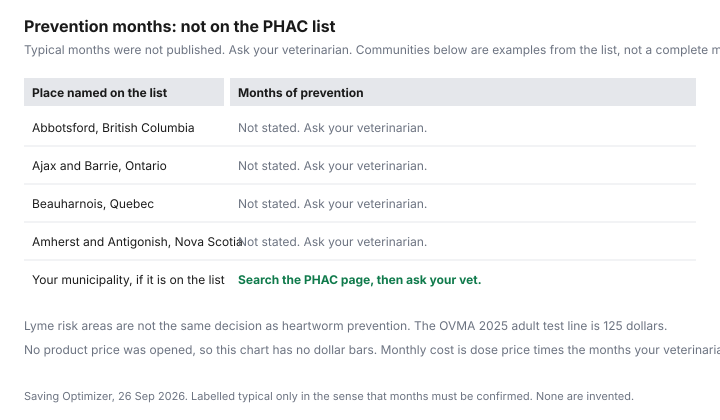

Pets · Canada
Flea, Tick and Heartworm Prevention in Canada: Seasonal Costs and How to Pay Less
Parasite prevention is a season, a dose, and a test, multiplied by a price you can read on a receipt. A yearly range that gets repeated in forums was not on a page opened for this draft, so it is not used. What was printed is an Ontario association average, a charity clinic’s test price, a federal list of Lyme risk communities, a U.S. council’s testing position, and the Competition Bureau’s account of why the box may only be sold through a veterinarian. Your veterinarian decides whether your animal needs a product, and for which months. This is not veterinary advice and not a product pick.
Key takeaways
- Ontario Veterinary Medical Association, 2025 canine PDF: adult-dog parasite prevention $238, heartworm/Lyme test $125, fecal exams $66. Puppy parasite prevention $189, deworming $91, fecal exams $131.
- Ontario SPCA 2026: a 4DX test is $80. That is one clinic’s list price, not the OVMA average.
- The Public Health Agency of Canada lists Lyme risk communities. It does not list prevention months. Ask your veterinarian before you buy a twelve-dose box “just in case.”
- The Competition Bureau, 30 Oct 2024, describes limits on buying pet medication outside the veterinary channel, with a Quebec pharmacist-supply exception. A written prescription is the question to ask. No brand is named here.
- Monthly cost is price divided by doses, times the months you will actually give, at the weight band on the label. Do not split a dose to stretch a box.
Regional risk: why the season differs by province
Ticks and mosquitoes do not follow a national calendar that this build could quote. The Public Health Agency of Canada’s Lyme disease risk page, opened 26 Sep 2026, is a long list of communities and forward-sortation areas. The extract includes Abbotsford in British Columbia, Ajax and Barrie in Ontario, Beauharnois in Quebec, and Amherst and Antigonish in Nova Scotia, among many others. The page is how you check whether your municipality is on the federal risk list. It does not say “start in April” or “stop in November.” Those months would be an invention. Search the list, then ask your veterinarian what that listing means for prevention where you walk the dog, including travel to a risk area.
Heartworm is a separate parasite from the Lyme bacterium, even when one test looks for both. The OVMA 2025 sheet puts “heartworm/Lyme test” on one line at $125 for an adult dog, which tells you the association’s average budget treats them as a paired annual test, not that every dog in every province has the same risk. The Companion Animal Parasite Council’s heartworm page is written around U.S. prevalence, including the southeastern states. Do not copy a U.S. map onto Manitoba or southern Ontario. Use it for the testing logic in the next section, and use your veterinarian for the Canadian risk.
Combination products vs separate: cost per month
No retail price for a flea, tick, or heartworm product was opened on 26 Sep 2026. A monthly comparison without prices would be fiction. The method, for the day you have two receipts, is short. Write the price of the box, the number of doses in the box, and the weight band on the box. Price per dose is price divided by doses. If you will give it for six months, the season cost is six times the price per dose. If a combination box covers fleas, ticks, and heartworm, you do not also add a second product for the same parasite unless your veterinarian told you to. If you buy separate products, add only the ones prescribed.
A combination product is cheaper only when its season total is lower than the separate season total for the same months and the same animal. A twelve-dose box used for four months is not a four-month price. The unused doses are still money, and they may expire. The OVMA adult-dog prevention line of $238 is a provincial average for a year, not a target you have failed or beaten. If your receipt for the months you use is far from $238, you have learned something about your animal and your city. You have not found an error in the PDF.
| Step | What to write | Opened benchmark, if any |
|---|---|---|
| Product and weight band | Name from the label your veterinarian prescribed. Band must match the dog’s current weight. | No brand priced |
| Price per dose | Box price divided by doses in the box. | Not opened |
| Months used | The months your veterinarian names, not a twelve-month default. | PHAC list has communities, not months |
| Where it was filled | Clinic or pharmacy, and the date. | See the prescription section |
| Season total | Price per dose times months. Add a second product only if it covers something else you were told to use. | OVMA 2025 adult prevention average $238 for the year |
Heartworm testing requirements
The Companion Animal Parasite Council’s heartworm guidelines say annual testing of all dogs for both antigen and microfilariae, including dogs already on prevention. Antigen tests generally detect mature infections, and a negative test does not conclusively rule out adult worms. The council’s page is a U.S. clinical reference. It is cited here for that testing statement, not for a Canadian incidence rate. Your veterinarian may follow a different Canadian protocol. Ask which test they want and what a positive result would change before you buy the prevention.
Two Canadian dollar figures were printed. The Ontario SPCA 2026 table lists 4DX at $80. The OVMA 2025 adult-dog sheet lists a heartworm/Lyme test at $125 as a provincial average. They are not the same line item and not the same setting. A puppy sheet on the OVMA PDF lists parasite prevention at $189, deworming medication at $91, and fecal exams at $131, and it does not repeat the adult heartworm/Lyme line. Fecal exams for an adult dog are $66 on that sheet. Budget the test your clinic actually runs. The clinic guide explains who the Ontario SPCA will see. It will not see an emergency, and a heartworm test is not emergency care.
Buying by prescription elsewhere
The Competition Bureau’s 30 Oct 2024 article says veterinarians and pharmacists may both dispense pet medication, and that exclusive distribution has often meant distributors sell to veterinarians and not to pharmacies. It says about 30 percent of veterinary revenues come from product sales, including prescriptions. It says Ontario’s regulation limits veterinarians from reselling pet medication to pharmacists except in specific cases, and that British Columbia, New Brunswick, and Nova Scotia have their own limits on resale. Quebec is the case study: in 2021, pharmacists there obtained supply through a national distributor. The Bureau’s recommendation is that provinces consider mandating supply to pharmacists. That is a policy argument, not a coupon.
What you can do this month is ask. Ask the veterinarian for a written prescription if the law and the product allow it. Ask a pharmacy, including one in Quebec if that is where you live, whether it can obtain that product. Compare the pharmacy’s full price, dispensing fee included, with the clinic’s price for the same dose count and the same weight band. A lower sticker that is the wrong milligram strength is not a saving. This page does not name a pharmacy, a manufacturer, or a “best” preventive. Another guide will cover prescription channels in more detail. The short version is the paragraph you just read.
Dose by weight: avoid waste
Preventive boxes are sold in weight bands. The band on the box has to match the dog on the scale, on the day you buy. A dog who has gained two kilograms may have left the band. Weigh before you refill. Do not split a chew to make a large-dog dose cover two small dogs, and do not double a small dose to cover a heavier dog, unless the label or your veterinarian says that exact thing. The CVMA’s warning about not changing a vaccine dose for body weight is a vaccine statement. The parallel for prevention is simpler: follow the weight band you were prescribed.
Waste is also leftover months. If your veterinarian says four months and the cheapest box is twelve, the price per dose can look low while you throw eight doses away next spring. Write the expiry. A sunk box is not a reason to give product in January if you were told the risk is seasonal. It is a reason to buy a count closer to the months next time.
Annual budget table
The only annual dollars this draft will add are the OVMA 2025 adult-dog lines that are actually about parasites and tests: prevention $238, heartworm/Lyme test $125, fecal exams $66. Added, that is $429. The addition is arithmetic on three published averages so you can see them in one place. It is not your quote. It leaves out flea products the PDF did not separate from the $238 prevention line, and it leaves out any pharmacy price you have not collected. The puppy lines, prevention $189 plus deworming $91 plus fecal exams $131, add to $411. A puppy is not an adult. Do not add the puppy stack on top of the adult stack for the same dog in the same year.
| Line | Puppy sheet | Adult dog sheet |
|---|---|---|
| Parasite prevention | $189 | $238 |
| Deworming medication | $91 | Not a separate adult line on the PDF |
| Fecal exams | $131 | $66 |
| Heartworm/Lyme test | Not on the puppy lines captured | $125 |
| Sum of the lines shown | $411 | $429 |

When you know the months, move that cash monthly. A sinking fund and a zero-based budget are how a $238 average stops being a June surprise. The vaccine guide is the separate decision about a Lyme shot. A vaccine and a monthly preventive are not substitutes for each other.
Sources & date stamps
- Ontario Veterinary Medical Association, 2025 cost of owning a dog and a puppy PDF. Parasite, deworming, fecal, and heartworm/Lyme lines as tabulated. Opened 26 Sep 2026.
- Ontario SPCA 2026 fee table: 4DX $80. Opened 26 Sep 2026.
- Public Health Agency of Canada, Lyme disease risk areas, community and postal list. No season months. Opened 26 Sep 2026.
- Companion Animal Parasite Council heartworm guidelines: annual antigen and microfilaria testing. U.S. prevalence context not applied to a Canadian rate. Opened 26 Sep 2026.
- Competition Bureau, “Pets, vets and meds,” 30 Oct 2024. Distribution limits and the Quebec pharmacist-supply case. Opened 26 Sep 2026.
- No product shelf price was opened. A $300 to $600 yearly claim was not on these pages and is not used.
Frequently asked questions
When is tick season in my province?
The Public Health Agency of Canada page opened 26 Sep 2026 is a list of communities and postal areas where Lyme risk has been identified. It does not print a start month or an end month for ticks. Communities in several provinces appear, including examples such as Abbotsford, Ajax, and Beauharnois. Search your municipality on that page, then ask your veterinarian which months of prevention fit your dog. A national season was not on the page.
Do dogs need heartworm prevention in Canada?
This page cannot answer for your dog. The Ontario Veterinary Medical Association’s 2025 canine cost sheet includes a heartworm/Lyme test at $125 and parasite prevention at $238 as provincial averages for an adult dog, which shows those lines are part of the association’s routine-cost picture. The Companion Animal Parasite Council, a U.S. source, recommends annual antigen and microfilaria testing. Whether your dog needs prevention, and for which months, is your veterinarian’s decision based on where you live and travel.
Can I fill parasite prevention at a pharmacy?
In many cases a veterinarian still has to prescribe, and a pharmacy may dispense if it can obtain the drug. The Competition Bureau’s 30 Oct 2024 article says exclusive distribution has often kept pet medications inside veterinary channels, with a Quebec exception for pharmacist supply and tighter resale limits in Ontario, British Columbia, New Brunswick, and Nova Scotia. Ask your veterinarian for a written prescription and ask a pharmacy whether it can fill that exact product. This page does not name a pharmacy or a brand.
Is a combination product cheaper?
Only the receipt can say. A combination product’s monthly cost is its price divided by the months you will give. Separate products are added the same way, and you only add the parasites your veterinarian says to cover. No combination price and no separate-product price were on a retailer page opened 26 Sep 2026, so this guide does not declare a winner.
Why does my dog need a heartworm test first?
The Companion Animal Parasite Council says all dogs, including those on prevention, should be tested annually with both an antigen test and a microfilaria test, because a negative antigen test does not always rule out infection. The Ontario SPCA lists a 4DX test at $80 and the OVMA 2025 sheet lists a heartworm/Lyme test at $125. Those are different sources and different settings. Ask your veterinarian which test they require before prevention starts. Giving prevention without the test they asked for can be the expensive mistake.